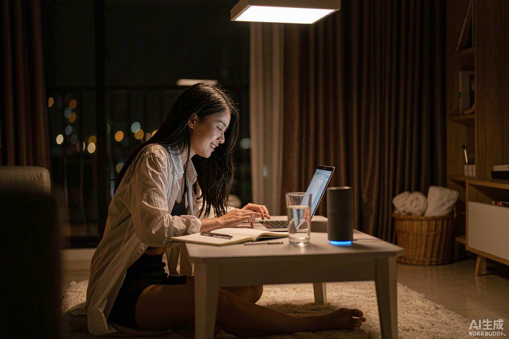

Whose Home, Whose Rules?

SYDNEY — Every night at 10 o‘clock, the lights in the Smith family living room will automatically dim and the air conditioner will switch to night mode. This set of automated rules recommended by AI once made the whole family feel convenient, but now it has become the starting point of a family dispute. Recently, a family in Sydney had a disagreement over the management authority of a shared smart home, which has sparked public discussions on AI automation and home control rights. It is worth noting that the system in dispute has not experienced any technical malfunctions but has been operating normally in accordance with the authorized rules all along.
A set of automated rules that once satisfied the whole family
By 2040, the active smart home system developed based on Xiaomi HyperMind had already been popularized in some smart homes in Sydney. Compared with the early systems that required users to manually set time and device operations, the new generation of technology can identify lifestyle patterns based on long term accumulated behavioral records and recommend cross device automation solutions. Ms Smith, who lives in Sydney, is a long term user of this technology. Two years ago, the system recommended a night automation solution based on the family’s previous equipment usage habits: at 10 p.m. every night, the living room lights gradually dimmed, the air conditioner switched to sleep mode and the curtains automatically closed. Ms Smith, as the main account manager of the family, confirmed and activated this set of rules. Ms Smith said, “Before going to bed, I always had to check the lights and air conditioner at home. Now the system does it automatically, which really saves a lot of time.” But a few months ago, Ms Smith’s daughter began working remotely at night and often had to use the computer in the living room until the early hours of the morning. At 9:59 p.m., the living room was still bright. At 10 o‘clock, the ceiling lights gradually dimmed and the air conditioner began to adjust the temperature. The daughter had to turn on her phone again and restore the lights and temperature to the working state. The same situation occurred again the next night. Ms Smith’s daughter said: “It’s not that I don’t like smart homes. I just don’t want it to always arrange my current life according to my past lifestyle.” She once attempted to permanently modify the automated rules, only to find that the home management interface displayed: “Only the primary account manager can edit.” Although the device status can be temporarily overwritten.To change the long term rules, Ms Smith still needs to confirm through the account.
The same system, different life demands
For the Smith family, simply shutting down all automation is not an ideal solution either. Ms Smith’s husband has difficulty moving around and has long relied on automatic lighting and curtain control to complete some of his daily activities. In the past, he needed his family’s help to complete some operations, but now he can manage his living environment more independently through automation.
“These functions are not just convenient for me; they also prevent me from bothering others every time.”
Therefore, different demands emerged within the family. Ms Smith hopes to retain the automated services she is accustomed to. Her daughter hopes to be able to independently adjust the rules of the shared space, while her husband is worried that the cancellation of automation will increase his dependence on others again. The technology originally designed to alleviate the burden of household chores now forces family members to spend extra time discussing permissions, adjusting rules and coordinating different schedules.
Xiaomi: The system operates according to the user's authorization
In response to this controversy, the technical service team responsible for the smart home system stated that all long term automation rules are confirmed by users with corresponding permissions, and other family members can also temporarily adjust the device status. The company’s technical director stated: “The goal of active intelligence is to reduce repetitive operations rather than decide for users how to live.” But this explanation did not fully address the controversy.